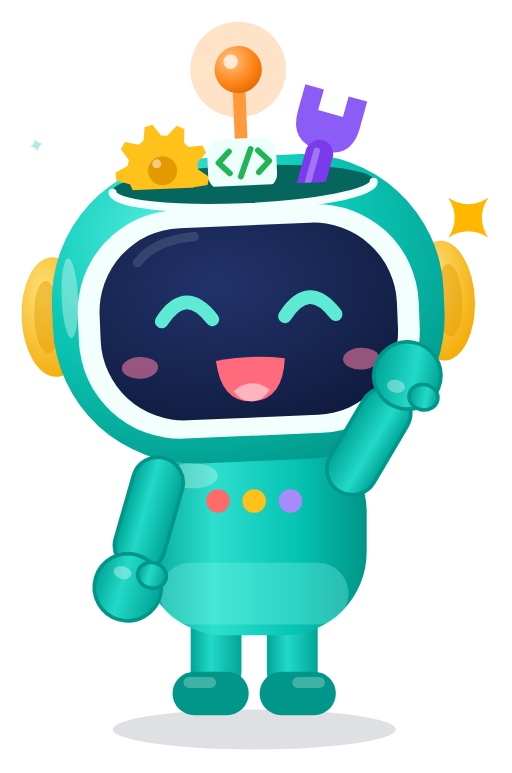
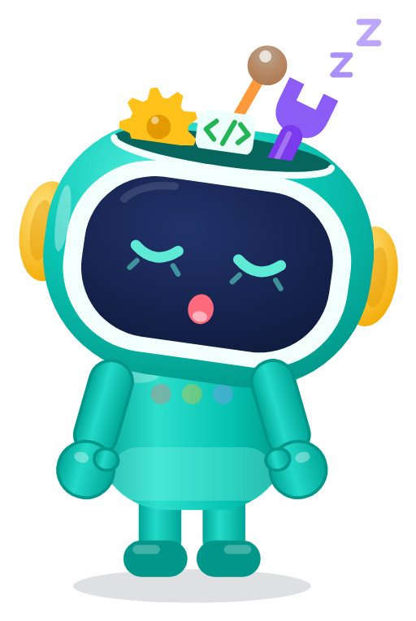
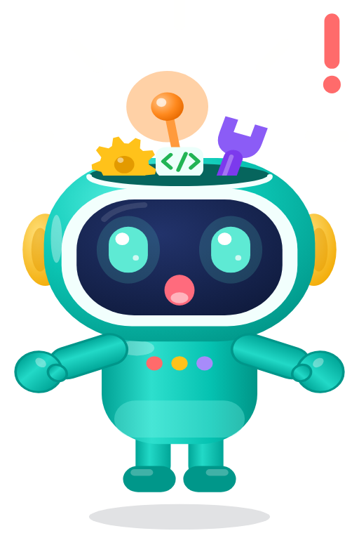
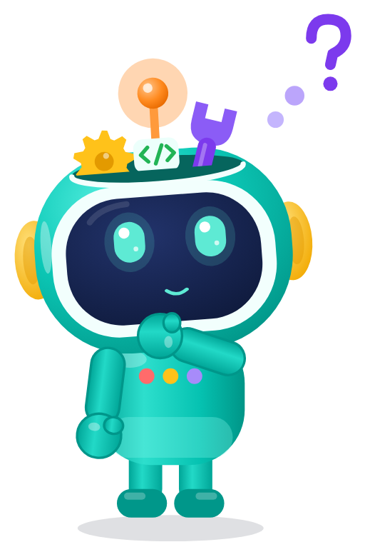

Vector mark, wordmark and lockup in full colour, white (reversed) and ink. The intro plays once (1.5 s): press ↻ to replay.
icon.png 1024 · adaptive foreground/background/monochrome 1024 · splash-icon · favicon · notification icon (white silhouette, 96 px, shown on navy).
Each tile loops in this preview with ↻; in the app, one-shot FX play once. The sound button plays the paired sound.
CSS-free frames for react-native-svg: fx/static/*-static.svg, plus a PNG of each.
New: thinking · sleepy (wakes up to cheer you on) · surprised · celebrate. Also the 7 approved moods, re-titled Captain Jetty. Files keep the pip-* names.
assets/pip: baked static SVG (tight viewBox) and transparent PNG.





Text-free, 600×480: the app shows the title, body and button so they can be translated. Static versions are in assets/empty/static.
All mastered to −16 LUFS (true peak ≤ −1.5 dBTP), like the existing FX sounds.
| Name | Length | Use | Haptic (expo-haptics) | Vol | Files | |
|---|---|---|---|---|---|---|
| ui-tap | 0.12 s | Any button / card tap | Haptics.selectionAsync() | 0.6 | wav · mp3 · ogg | |
| ui-toggle | 0.16 s | Switches, checkboxes, segmented controls | Haptics.impactAsync(ImpactFeedbackStyle.Light) | 0.6 | wav · mp3 · ogg | |
| ui-back | 0.22 s | Back / navigate up, tab change | Haptics.selectionAsync() | 0.5 | wav · mp3 · ogg | |
| ui-sheet-open | 0.32 s | Bottom sheet / modal opens | Haptics.impactAsync(ImpactFeedbackStyle.Soft) | 0.6 | wav · mp3 · ogg | |
| ui-sheet-close | 0.28 s | Bottom sheet / modal closes | Haptics.impactAsync(ImpactFeedbackStyle.Soft) | 0.5 | wav · mp3 · ogg | |
| ui-error | 0.42 s | Gentle "not quite" for form errors / failed actions (never shaming) | Haptics.notificationAsync(NotificationFeedbackType.Warning) | 0.7 | wav · mp3 · ogg | |
| ui-success-small | 0.55 s | Small success: saved, step done | Haptics.notificationAsync(NotificationFeedbackType.Success) | 0.8 | wav · mp3 · ogg | |
| ui-notification | 0.8 s | In-app notification / toast | Haptics.notificationAsync(NotificationFeedbackType.Success) | 0.8 | wav · mp3 · ogg | |
| ui-message-pop | 0.26 s | New chat / mentor message bubble | Haptics.impactAsync(ImpactFeedbackStyle.Light) | 0.7 | wav · mp3 · ogg | |
| ui-pin-digit | 0.1 s | Each PIN pad digit (kid login, parent gate) | Haptics.selectionAsync() | 0.6 | wav · mp3 · ogg | |
| ui-pin-wrong | 0.4 s | Wrong PIN (soft, with shake animation) | Haptics.notificationAsync(NotificationFeedbackType.Warning) | 0.7 | wav · mp3 · ogg | |
| ui-pin-unlock | 0.7 s | Correct PIN / parent gate opened | Haptics.notificationAsync(NotificationFeedbackType.Success) | 0.8 | wav · mp3 · ogg | |
| ui-countdown-tick | 0.22 s | Match countdown 3-2-1 | Haptics.impactAsync(ImpactFeedbackStyle.Medium) | 0.8 | wav · mp3 · ogg | |
| ui-countdown-go | 0.7 s | Countdown "Go!" | Haptics.impactAsync(ImpactFeedbackStyle.Heavy) | 0.9 | wav · mp3 · ogg | |
| ui-match-whistle | 0.8 s | League match start | Haptics.impactAsync(ImpactFeedbackStyle.Medium) | 0.8 | wav · mp3 · ogg | |
| ui-match-win | 2.3 s | League match won (fanfare) | Haptics.notificationAsync(NotificationFeedbackType.Success) | 1.0 | wav · mp3 · ogg | |
| ui-match-lose | 1.5 s | League match lost: encouraging "next time" motif | Haptics.impactAsync(ImpactFeedbackStyle.Soft) | 0.9 | wav · mp3 · ogg | |
| ui-badge-earned | 1.4 s | Badge unlocked (pairs with fx08-badge-reveal) | Haptics.notificationAsync(NotificationFeedbackType.Success) | 1.0 | wav · mp3 · ogg | |
| ui-purchase-complete | 1.1 s | Parent purchase / subscription confirmed | Haptics.notificationAsync(NotificationFeedbackType.Success) | 0.9 | wav · mp3 · ogg | |
| ui-download-complete | 0.95 s | Content pack download finished (pairs with fx15) | Haptics.notificationAsync(NotificationFeedbackType.Success) | 0.8 | wav · mp3 · ogg |